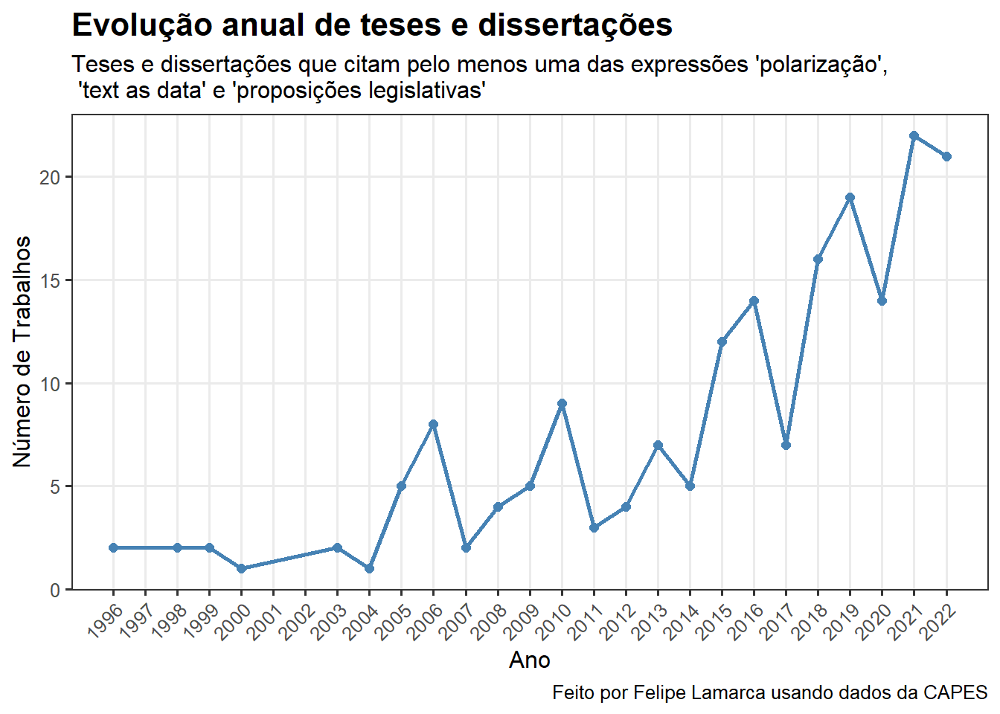
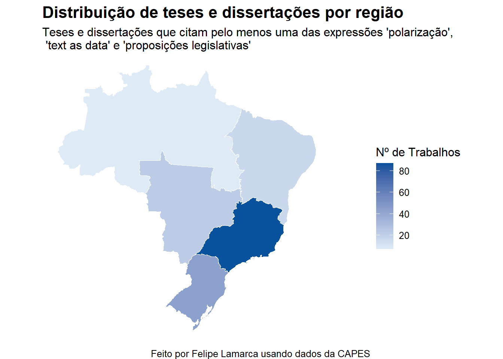
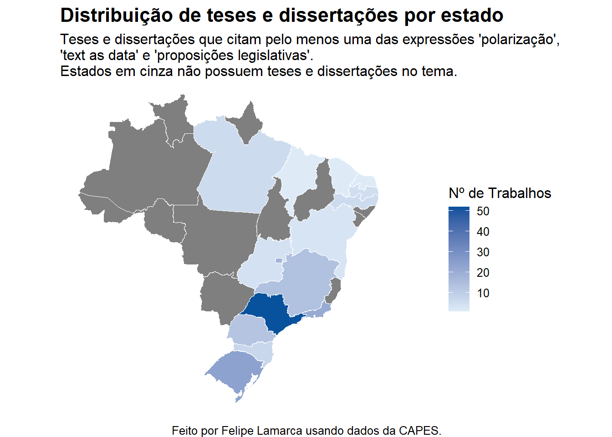
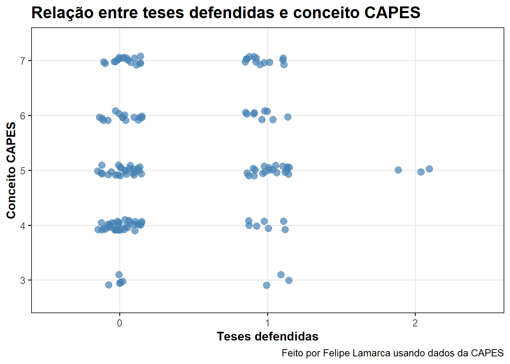
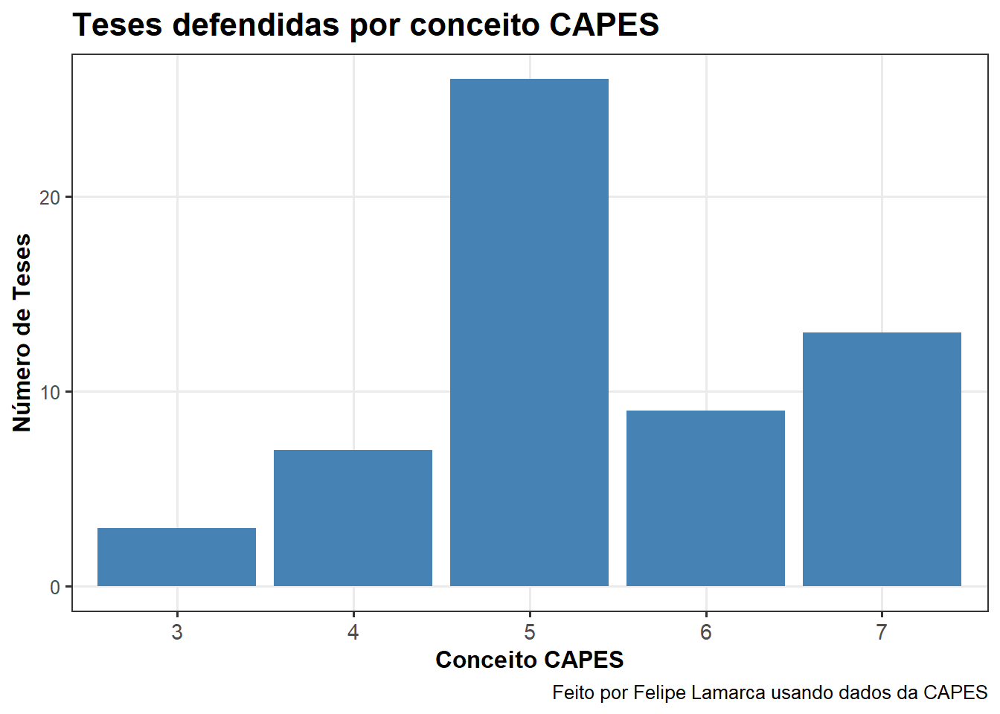

library(tidyverse)
library(geobr)
library(sf)
library(stringi)
library(gt)13 Lista II
Análise de dados
Abstract
Neste exercício, analiso a produção de teses e dissertações de programas dos pós-graduação na Capes das áreas de Sociologia ou Ciência Política e Relações Internacionais, entre os anos de 1987 e 2022. Em particular, foco nas teses e dissertações que citam, no resumo, pelo menos um dos seguintes termos: ‘polarização’, ‘text as data’ e ‘proposições legislativas’, totalizando \(n = 187\).
13.1 1. Importação
Vamos começar importando os dados. Mais especificamente, primeiro vamos ler os arquivos com as teses e dissertações (divididas em 6 tabelas diferentes) para, depois, ler os dados dos programas (uma única tabela). Utilizando a função list.files, podemos nos valer do argumento pattern na função para acessar apenas os arquivos que respeitam alguma regra específica – no nosso caso, aqueles que começam com “capes”:
# listando os arquivos
list.files(path="data", patter="^capes")[1] "capes_1987-1992.csv" "capes_1993-1998.csv" "capes_1999-2004.csv"
[4] "capes_2005-2010.csv" "capes_2011-2016.csv" "capes_2017-2022.csv"paths_list <- list.files(path="data", pattern="^capes")
datasets <- list()
for (i in 1:length(paths_list)) {
datasets[[i]] <- read.csv(file = file.path("data", paths_list[i]))
}
teses_dissertacoes <- datasets %>%
bind_rows()Agora, vamos ler o arquivo programas.csv:
programas <- read.csv("data/programas.csv")
head(programas) CD_PROGRAMA UF CONCEITO
1 10001018041P7 RO 3
2 10001018009P6 RO 4
3 10001018016P2 RO 4
4 10001018039P2 RO 4
5 10001018017P9 RO 3
6 10001018006P7 RO 3Felizmente, as bases compartilham a coluna CD_PROGRAMA (ou codigo_programa), identificando o código do programa de pós-graduação. Isso facilita bastante a junção das bases.
teses_dissertacoes <- left_join(
x=teses_dissertacoes,
y=programas,
join_by(codigo_programa == CD_PROGRAMA)
)Sabemos que alguns trabalhos na base foram defendidos em programas de pós-graduação posteriormente descontinuados ou transformados, o que significa que suas notas de avaliação têm missing.
colSums(is.na(teses_dissertacoes)) / nrow(teses_dissertacoes) ano codigo_programa sigla_ies nome_ies
0.00000000 0.00000000 0.00000000 0.00000000
nome_programa grande_area area_conhecimento area_avaliacao
0.00000000 0.00000000 0.00000000 0.00000000
autor titulo nivel palavras_chave
0.00000000 0.00000000 0.00000000 0.00000000
resumo UF CONCEITO
0.00000000 0.06421002 0.06421002 Trata-se de aproximadamente ~6,5% da base. Não trataremos os casos por ora, já que, no fim das contas, as teses e dissertações foram defendidas e as temáticas abordadas podem ser importantes para algumas agendas de pesquisa. De fato, caso eventualmente precisemos fazer gráficos que utilizem as colunas UF ou CONCEITO, essas entradas serão “dropadas”.
13.2 2. Seleção de palavras-chave
Vamos filtrar os resumos de todas as teses e dissertações na base, garantindo que mantenhamos apenas as dissertações cujo resumo apresenta, pelo menos uma vez, alguma das palavras ou termos a seguir: “proposições legislativas”, “text as data” e “polarização”. O primeiro passo é padronizar a coluna dos resumos para que todos estejam em lower case.
teses_dissertacoes$resumo <- str_to_lower(teses_dissertacoes$resumo)Agora, vamos filtrar as palavras especificadas:
teses_dissertacoes$proposicoes_legislativas <- str_detect(
teses_dissertacoes$resumo,
"proposições legislativas"
)
teses_dissertacoes$text_as_data <- str_detect(
teses_dissertacoes$resumo,
"text as data"
)
teses_dissertacoes$polarizacao <- str_detect(
teses_dissertacoes$resumo,
"polarização"
)
teses_dissertacoes_flt <- teses_dissertacoes %>%
filter(
text_as_data == TRUE | proposicoes_legislativas == TRUE | polarizacao == TRUE
)
cat("A partir de agora vamos trabalhar com",
nrow(teses_dissertacoes_flt),
"teses/dissertações.")A partir de agora vamos trabalhar com 187 teses/dissertações.13.3 3. Evolução ao longo do tempo
A melhor maneira de visualizar dados ao longo do tempo é utilizando séries temporais. No nosso caso, observamos que o número de teses e dissertações defendidas (e, claro, que citam no resumo os termos de interesse) vem crescendo ao longo do tempo. Isso se justifica pelo crescente interesse da literatura pela polarização, termo que domina os demais termos com \(141\) ocorrências.
teses_dissertacoes_flt %>%
group_by(ano) %>%
summarise(n = n()) %>%
ggplot(aes(x = ano, y = n)) +
geom_line(color = "steelblue", linewidth = 1) +
geom_point(color = "steelblue", size = 2) +
labs(
title = "Evolução anual de teses e dissertações",
subtitle = "Teses e dissertações que citam pelo menos uma das expressões 'polarização',\n 'text as data' e 'proposições legislativas'",
x = "Ano",
y = "Número de Trabalhos",
caption = "Feito por Felipe Lamarca usando dados da CAPES"
) +
theme_bw(base_size = 12) +
theme(
plot.title = element_text(face = "bold", size = 16),
plot.subtitle = element_text(size = 12),
axis.text.x = element_text(angle = 45, hjust = 1),
panel.grid.minor = element_blank()
) +
scale_x_continuous(breaks = seq(min(teses_dissertacoes_flt$ano),
max(teses_dissertacoes_flt$ano), by = 1))
13.4 4. Diferenças regionais
Agora vamos criar gráficos por estado e região, e, para isso excluiremos as linhas em que UF é missing. Essa não seria necessariamente a única abordagem possível: poderíamos, por exemplo, intuir (ou, quando possível, extrair usando regex) a unidade federativa a partir do nome da universidade. Optaremos pela primeira abordagem, bem mais simples – mesmo porque o percentual de missing é, apesar de relevante, pequeno.
colSums(is.na(teses_dissertacoes_flt)) / nrow(teses_dissertacoes_flt) ano codigo_programa sigla_ies
0.00000000 0.00000000 0.00000000
nome_ies nome_programa grande_area
0.00000000 0.00000000 0.00000000
area_conhecimento area_avaliacao autor
0.00000000 0.00000000 0.00000000
titulo nivel palavras_chave
0.00000000 0.00000000 0.00000000
resumo UF CONCEITO
0.00000000 0.05882353 0.05882353
proposicoes_legislativas text_as_data polarizacao
0.00000000 0.00000000 0.00000000 Primeiro, vamos ler as informações de geometria, necessários para a geração dos mapas:
coordenadas_estados <- read_state()
coordenadas_regiao <- read_region()Agora vamos gerar o gráfico por região, manipulando a coluna UF usando a função mutate para criar essa nova coluna:
# frequencia por regiao
teses_dissertacoes_flt %>%
drop_na() %>%
mutate(
regiao = case_when(
UF %in% c("PA", "RN") ~ "Norte",
UF %in% c("BA", "CE", "MA", "PB", "PE") ~ "Nordeste",
UF %in% c("DF", "GO") ~ "Centro Oeste",
UF %in% c("MG", "RJ", "SP") ~ "Sudeste",
UF %in% c("PR", "RS", "SC") ~ "Sul",
TRUE ~ NA_character_
)
) %>%
group_by(regiao) %>%
summarise(n = n()) %>%
full_join(coordenadas_regiao, join_by(regiao == name_region)) %>%
st_as_sf() %>%
ggplot(aes(fill = n)) +
geom_sf(color = "white", size = 0.3) +
scale_fill_gradient(
name = "Nº de Trabalhos",
low = "#deebf7", high = "#08519c"
) +
labs(
title = "Distribuição de teses e dissertações por região",
subtitle = "Teses e dissertações que citam pelo menos uma das expressões 'polarização',\n 'text as data' e 'proposições legislativas'",
caption = "Feito por Felipe Lamarca usando dados da CAPES"
) +
theme_void(base_size = 12) +
theme(
plot.title = element_text(face = "bold", size = 16),
plot.subtitle = element_text(size = 12),
legend.position = "right",
panel.grid = element_blank()
)
E, por fim, vamos gerar o mapa por UF:
# frequencia por UF
teses_dissertacoes_flt %>%
drop_na() %>%
group_by(UF) %>%
summarise(
n = n()
) %>%
full_join(coordenadas_estados, join_by(UF == abbrev_state)) %>%
st_as_sf() %>%
ggplot(aes(fill = n)) +
geom_sf(color = "white", size = 0.3) +
scale_fill_gradient(
name = "Nº de Trabalhos",
low = "#deebf7", high = "#08519c"
) +
labs(
title = "Distribuição de teses e dissertações por estado",
subtitle = "Teses e dissertações que citam pelo menos uma das expressões 'polarização',\n'text as data' e 'proposições legislativas'. \nEstados em cinza não possuem teses e dissertações no tema.",
caption = "Feito por Felipe Lamarca usando dados da CAPES."
) +
theme_void(base_size = 12) +
theme(
plot.title = element_text(face = "bold", size = 16),
plot.subtitle = element_text(size = 12),
legend.position = "right",
panel.grid = element_blank()
)
Não é nenhuma surpresa que o número de teses e dissertações defendidas se concentre nos estados do Sul e Sudeste – em São Paulo, em particular. De fato, esse resultado deve se repetir para uma série de outros temas e palavras-chave. Essa análise provavelmente é, por si só, enviesada pela potencial concentração de programas de pós-graduação no Sudeste, assim como pela longevidade dos programas na região.
Essa é apenas uma hipótese que, pelo menos nessa ocasião, não será testada. Mas poderíamos, por exemplo, calcular algum tipo de índice que considere o número de trabalhos e o número de programas (taxa de trabalhos por programa, por exemplo), e avaliar se esse padrão ainda permanece.
Nota: eu poderia ter utilizado a coluna de região que já vem no resultado da função read_state() – o que provavelmente teria diminuído o código pela metade –, mas infelizmente só notei isso à posteriori.
13.5 5. Produção por programa
Agora vamos analisar a produção por programa, isto é, o número de teses e dissertações defendidas. Primeiro, vamos lembrar de verificar se o tipo do programa (mestrado ou doutorado) está padronizado:
table(teses_dissertacoes_flt$nivel)
Doutorado DOUTORADO Mestrado
18 43 29
MESTRADO MESTRADO PROFISSIONAL Profissionalizante
84 10 3 É, infelizmente não é bem o caso. Vamos padronizar deixando tudo em lower case e transformar “MESTRADO PROFISSIONAL” simplesmente em “mestrado”, ignorando eventuais diferenças.
Também vamos fazer algumas modificações nome do programa: na verdade, apenas buscarei torná-lo mais informativo juntando-o ao nome da instituição de ensino. Veja: os nomes dos programas se diferenciam pouco e são inconsistentes – por exemplo, “ciencia politica”, “ciência política” e assim por diante. Vamos tratar essas inconsistências e juntá-las ao nome da universidade que coordena o programa.
teses_dissertacoes_flt <- teses_dissertacoes_flt %>%
mutate(
nivel = str_to_lower(nivel),
nivel = case_when(
str_detect(nivel, "mestrado") ~ "mestrado",
str_detect(nivel, "doutorado") ~ "doutorado",
TRUE ~ nivel
),
# essa parte foi co-authored com o chatgpt
nome_programa = nome_programa %>%
str_to_lower() %>% # minúsculas
str_trim() %>% # remove espaços nas bordas
str_squish() %>% # remove espaços duplicados no meio
stri_trans_general("Latin-ASCII"), # remove acentos
nome_programa_ies = str_c(sigla_ies, " - ", nome_programa)
)
# dissertacoes
dissertacoes_por_programa <- teses_dissertacoes_flt %>%
filter(nivel == "mestrado") %>%
group_by(nome_programa_ies) %>%
summarise(
n_dissertacoes = n()
)
# teses
teses_por_programa <- teses_dissertacoes_flt %>%
filter(nivel == "doutorado") %>%
group_by(nome_programa_ies) %>%
summarise(
n_teses = n()
)
# tabela agrupada
teses_dissertacoes_por_programa <- full_join(
x=dissertacoes_por_programa,
y=teses_por_programa,
by="nome_programa_ies"
)
# apresentacao da tabela final bonitinha
teses_dissertacoes_por_programa %>%
arrange(desc(n_teses)) %>%
head(10) %>%
gt() %>%
cols_label(
nome_programa_ies = "Programa",
n_dissertacoes = "Dissertações",
n_teses = "Teses"
) %>%
tab_header(
title = "Produção Acadêmica por Programa",
subtitle = "Número de dissertações e teses por programa"
) %>%
tab_options(
table.font.size = "small",
row.striping.include_table_body = TRUE
)| Produção Acadêmica por Programa | ||
|---|---|---|
| Número de dissertações e teses por programa | ||
| Programa | Dissertações | Teses |
| UFRGS - ciencia politica | 2 | 7 |
| UFMG - ciencia politica | 4 | 5 |
| UFSCAR - ciencia politica | 2 | 5 |
| PUC/SP - ciencias sociais | 3 | 3 |
| UNB - ciencia politica | 5 | 3 |
| USP - ciencia politica | 6 | 3 |
| PUC-RIO - ciencias sociais | 2 | 2 |
| PUC-RIO - relacoes internacionais | 1 | 2 |
| UERJ - ciencia politica | 2 | 2 |
| UFPE - sociologia | 1 | 2 |
Observamos, aqui, que os três principais programas (em termos de número de teses publicadas) que citam esses termos são os de Ciência Política da UFRGS, UFMG e UFSCAR.
13.6 6. Visualização da produção
Por fim, vamos visualizar a produção dos programas. Basta agruparmos por ano, nome do programa, nível e conceito (que é o mesmo para todas as entradas agrupadas, então entra no agrupamento apenas para aparecer no dataset final), e, depois, pivotar a tabela para obter o número de dissertações e teses nas colunas.
producao <- teses_dissertacoes_flt %>%
filter(nivel %in% c("mestrado", "doutorado")) %>%
group_by(ano, nome_programa_ies, nivel, CONCEITO) %>%
summarise(n = n(), .groups = "drop") %>%
pivot_wider(
names_from = nivel,
values_from = n,
values_fill = 0
)Apresento abaixo um scatterplot com jitter que, na verdade, acaba sendo uma visualização sub-ótima na medida em que, quando agrupamos por ano, o \(n\) de teses defendidas fica muito pequeno.
producao %>%
drop_na() %>%
ggplot(aes(x = as.factor(doutorado), y = CONCEITO)) +
geom_jitter(width = 0.15, height = 0.1, color = "steelblue", size = 3, alpha = 0.7) +
labs(
title = "Relação entre teses defendidas e conceito CAPES",
x = "Teses defendidas",
y = "Conceito CAPES",
caption = "Feito por Felipe Lamarca usando dados da CAPES"
) +
theme_bw(base_size = 12) +
theme(
plot.title = element_text(face = "bold", size = 16),
axis.title = element_text(face = "bold"),
panel.grid.minor = element_blank()
)
Ignorando o ano e agrupando pelos conceitos, vemos que a maior parte das teses cujos resumos citam as palavras-chave indicadas foram defendidas por programas de pós-graduação com conceito 5.
producao %>%
drop_na() %>%
group_by(CONCEITO) %>%
summarise(n_teses = sum(doutorado), .groups = "drop") %>%
ggplot(aes(x = as.factor(CONCEITO), y = n_teses)) +
geom_col(fill = "steelblue") +
labs(
title = "Teses defendidas por conceito CAPES",
x = "Conceito CAPES",
y = "Número de Teses",
caption = "Feito por Felipe Lamarca usando dados da CAPES"
) +
theme_bw(base_size = 12) +
theme(
plot.title = element_text(face = "bold", size = 16),
axis.title = element_text(face = "bold"),
axis.text.x = element_text(size = 11),
panel.grid.minor = element_blank()
)
13.7 7. Exportação
Finalmente, exportamos a base para análises futuras.
teses_dissertacoes_flt %>%
select(ano, UF, codigo_programa, nome_programa_ies, titulo, resumo, autor) %>%
writexl::write_xlsx("data/teses_dissertacoes_flt.xlsx")